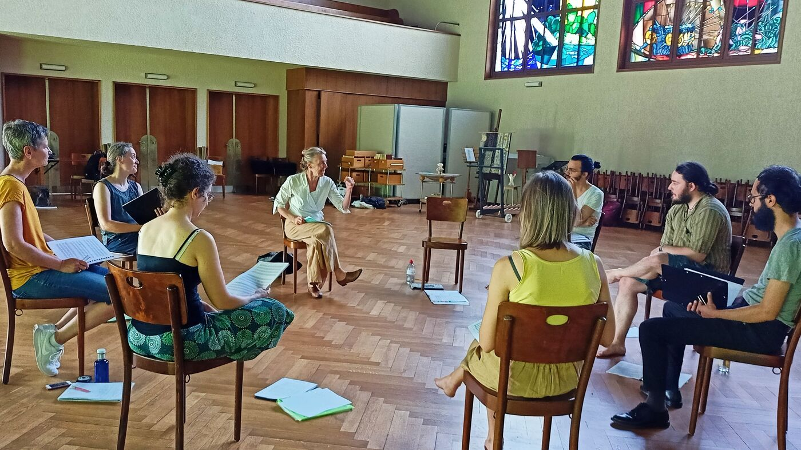

| works
for two voices
With textfragments from les chauses cdla walking in air
entrevoix
for choirs and more voices,
commissioned by Basel Festival ZeitRäume
a fluid sculpture through the city of Basel formed by smaller and bigger groups of humming voices over a period of ten days
Der Ton, die andern und ich von Isabel Zürcher.

for 8 voices 
text: 23 words from the Bible, translated by every singer in her mothertongue,
commissioned by Basel based ensemble Voce for a programme reflecting Whitsuntide.
photo: Yannick Badier
{kind=link}
for 10 voices and two saxophones
an imaginary journey with music-students of Gymnasium Oberwil reading, singing and dwelling through their favorite books.

for 2-4 voices
for any number of voices
text: epitaph found on a gravestone in the Strassbourg convent (c.1470-1480).
o mensch zart
bedenck der blumen art
Sotto Voce Vocal Collective
listen on soundcloud
Youtube
for voices
for 8 different-rooted voices
text: weather diaries and logbook-notes from 5 centuries in different languages
commissioned by Schweizer Tonkünstlerverein
eighthour composition for 14 voices
commissioned and performed from 10pm until 6am at Festival Performance Index Basel
a sound-line through the night sustained in changing quartetts under a light bulb
for 12 reading voices in different languages, Sudhaus, Werkraum Warteck Basel.
| works